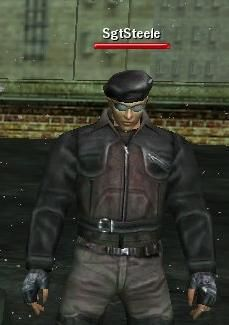

Archival Science Databanks
Communications intercept. Transmission detected Tue 22nd of Apr 2008 at 08:30 AM by RockyB. Communique follows:
This is a record of all information known about the 'Commando' program 'SgtSteele'.
SgtSteele

Organisational Rank: Apparent Squad Leader
Given Name: Jack Steele
Last observed neurokinetic level: 19
Threat Assesment: High
Further Comments: This commando seems to be in control of the others. LtWilliams is SgtSteele's Commanding Officer, although SgtSteele appears to desire greater control. SgtSteele's favourite District is International, but he will not leave Richland at this time. Intelligence indicates that he is taking the path of "Gunman", at least for the first part of his career.
Known Accomplices: "Kilarth", "Zion4Eva", "Atem"and "MbsterGTO", faction affiliations unkown. "Sykin" , "Romav", "Khalum" and one unknown party; all affiliated with the "Omega Syndicate"